Updated September 11, 2023
Important Notes:
An offline version of the manual is available here. The offline manual is kindly provided by Darthagnon.
This manual may contain information about features not available in the current stable release.
If you are having a specific problem, please check the issues list.
Table of Contents
- What is Game Backup Monitor?
- Requirements
- Quick Start
- Main Window Overview
- Settings
- The Game Manager (Summary)
- The Game Manager (Detailed)
- Backup and Restore during Gameplay
- Differential Backups
- Windows Registry Backups
- Full Backup and Restore
- Search
- Importing Game Configurations
- Ludusavi Manfiest
- Hosting Game Configurations
- Launching Games
- Custom Path Variables
- Store Variables
- Tools
- Custom Filters
- Automatic Syncing
- Limitations
- Technical Issues
- Technical Details

Game Backup Monitor is a simple, but flexible application that detects games as you play them. Once you finish playing a game, a backup of the saved games will be made automatically using 7-Zip compression. GBM can be used on a single computer, or on multiple computers to effectively add cloud support to any Windows game or application.
Game Backup Monitor was designed with gaming in mind, but it can be used to monitor any application on your PC!
Game Backup Monitor is completely free and open source software.
Game Backup Monitor is currently only available in English.
Verified Operating Systems:
Windows 10, Linux Mint 20
These operating systems are tested during development with the latest stable versions of .NET Framework (Windows) and Mono (Linux).
Supported Operating Systems:
Windows 8, Windows 7 SP1, Windows Vista SP2, Other Linux Distributions
These operating systems are supported, but are NOT tested during development.
Minimum Spec:
Single-core Processor at 1 GHz or higher with 512 MB RAM
Recommended Spec:
Multi-core Processor at 1 GHz or higher with 4 GB RAM
RAM requirements can scale dramatically with backup size and high compression levels.
8 GB RAM is recommended when using the Ultra compression setting.
Disk Space:
5 - 10 MB (Not including any prerequisites or space required for backups)
Windows 7 or older requires .NET Framework 4.5
Linux users, please read the FAQ for package requirements and installation instrutions.
When the Start-up Wizard appears read the instructions and follow along.

You'll need to set a backup folder in which GBM will store all game backups, as well as single data file (gbm.s3db) for tracking and syncing.
If you're planning to use GBM to sync save games between multiple computers this can be set to a cloud folder, network folder, or even a folder on a thumb drive. All computers you're planning to use should be set to this folder in the wizard.
GBM needs to know which games you want to monitor for and how to handle them. The Start-Up Wizard will allow you to download game configurations of your choosing from the official list (work in progress), or set them up yourself via the Add Game Wizard or Game Manager.
Once you have a list of games setup the work is done! GBM will now monitor for each game and run a backup when it's completed.
The main Game Backup Monitor window displays useful information and allows quick access to important functions.
The left portion of the window displays a list of all currently configured games and a search field to quickly filter the list.
- Selecting a game from the list will display related information and any available options in the right portion of the window.
- Double-click a selected game in the list to quickly open it's configuration in the Game Manager.
- The "Search" field allows filtering by Game Name (partial match) or by Tag (exact match). Use a hashtag to indicate a Tag search, like #Steam.
- The button to the right of the "Search" field can be used to clear the current filter and/or selected game.
The right portion of the window displays information and available options for any game currently selected or detected.
- The status of any backup or restore operation currently being performed is also displayed in this area.
- The options displayed in this area depend on the current status of the application, as well as the options you have enabled in Settings.
A detailed log of all the actions GBM has performed in the current session is also displayed, this log can be hidden by resizing the window. If this log becomes too large over a session it will be auto-saved and cleared.

The right side of the menu bar will show notifications(if enabled) about new saved games to restore. Clicking the notification will clear it for the current session and bring you directly to the Game Manager.

The status bar shows what GBM is currently doing, the current monitor status and provides quick access to some functions.
- The
 (Scanning),
(Scanning),  (Detected) or (Stopped) status button on the right can be used to control starting, stopping and cancelling game detection. This can also be accomplished with the File menu and system tray menu.
(Detected) or (Stopped) status button on the right can be used to control starting, stopping and cancelling game detection. This can also be accomplished with the File menu and system tray menu. - The (Collapse) or (Expand) button on the left of the status bar allows you to toggle displaying the "Game List" section of the window.
- The (Normal User) or
 (Admin) button on the left of the status bar indicates if GBM is running in normal mode or as administrator. GBM can handle most situations running with normal mode, clicking this button lets you switch to Administrator quickly when it's required. This feature is not available when running in Linux.
(Admin) button on the left of the status bar indicates if GBM is running in normal mode or as administrator. GBM can handle most situations running with normal mode, clicking this button lets you switch to Administrator quickly when it's required. This feature is not available when running in Linux.

A (Cancel) button will appear on the main window during backup & restore operations, clicking this will attempt to cancel the current operation.
- Clicking "Cancel" may not have an immediate response, it can take some time before the operation reaches a point where it can be terminated.
- The "Cancel" button does NOT undo the operation, cancelling an operation may result in an unusable backup file or a corrupted save game.
- The "Cancel" button is intended for emergencies only, such as an incorrect configuration causing a lengthy backup of the wrong folder.
The main window can be closed and hidden to the system tray in Windows, or minimized to the taskbar in Linux. All important menu options are available from the system tray menu. The system tray icon and menu may not be available in Linux, depending on the desktop environment and Mono version used.
If you prefer classic GBM look from older versions, you can tweak and customize the default appearance of this window in Settings.
The Settings screen can be found in the File menu.
On this screen you can change core settings like your backup folder, or tweak a variety of minor settings to customize your experience.
Choose a category of settings by using the list panel on the left side of the window.
The "Defaults" button will revert ALL settings to their default.
The "Reset Warnings" button will reset all one-time warnings or messages that have been hidden. You need to click "Save" after using this button for it to take effect.
Clicking Cancel or closing the window will cancel any changes made on this screen.
When modifying the backup folder or any sync settings, be sure to read any warning messages carefully.
General
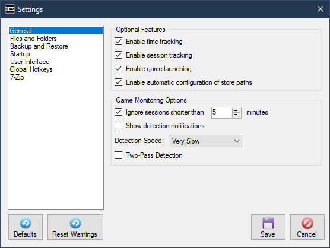Enable time tracking:
GBM will record and display game session times when this is enabled. When it's disabled no time data is recorded or displayed. Toggling this setting has no effect on time data that's already been recorded.
Enable session tracking:
When enabled, GBM will record individual session data and make the "Session Viewer..." available from the Tools menu. Toggling this setting has no effect on session data that's already been recorded.
Enable game launching:
When enabled, all features related to launching games from GBM become available. This includes the "Launcher Manager", "Launch Settings", the "Play" button on the main window and the recently played tray menu options. The "Session Tracking" feature needs to be enabled and have enough recorded data to display any recently played games in the system tray menu.
Enable automatic configuration of store paths:
When enabled, GBM will attempt to automatically create path variables for store specific locations such as Steam Cloud. See the Store Variables section for more details.
Ignore sessions shorter than X minutes:
GBM can suppress backups if a session time is too short. This is useful to prevent unwanted backups just because you loaded a game for a few minutes. If session tracking is enabled, it will use this setting and ignore short sessions.
Show detection notifications:
This will require GBM to show a standard Windows notification when a game is detected.
Detection Speed:
This allows you to customize how fast GBM will detect games. A slower setting will reduce CPU usage when monitoring for a large amount of games.
This setting also affects how long it takes GBM to detect when a game session has ended.
Two-Pass Detection:
This setting allows you to customize the method GBM uses to detect games.
- When Two-Pass Detection is enabled, the same process needs to be found on two consecutive detection passes to trigger GBM. This makes detection slower, but more reliable. This is the default.
- When Two-Pass Detection is disabled, a process is registered as detected after a single pass. This makes detection twice as fast, but it may be unreliable in certain situations.
Files and Folders

Backup Folder:
This is the backup folder where GBM stores all game backups and it's remote database.
Temp Folder:
This is the temporary folder that GBM uses to process backup files before they are moved to the Backup Folder.
Create a sub-folder for each game:
This indicates if you want GBM to create a sub-folder in the backup folder for each game. This is handy for keeping your backup folder more organized.
Delete files to the Recycle Bin:
This indicates if you want GBM to move files, such as manually deleted or expired backups, to the Recycle Bin instead of permenantly deleting them.
This setting does not apply in Linux where files will be permenantly deleted.
Backup and Restore
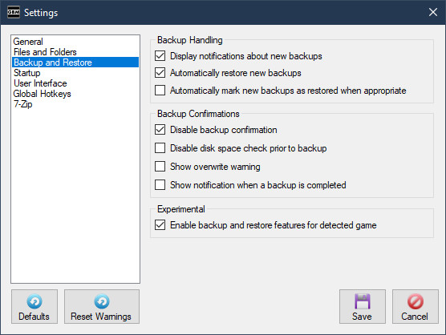Display notifications about new backups:
This indicates if you want GBM to display notifications when new backups are detected or restored.
These notifications are presented differently depending on your other settings:
- When automatically restoring new backup files, standard Windows notifications are used. These notifications are not stored in the action center when using Windows 10, this is a known issue that may be addressed in a future release.
- When manually handling new backup files, a small notification will appear on the menu bar and GBM system tray menu. Clicking this notification will take you directly to the Game Manager, where you can restore your backups as you see fit.
Automatically restore new backups:
This indicates if GBM will automatically restore new backup files when they are detected. GBM will automatically restore backup files only if the save folder for the game currently exists.
When using cloud software (such as Dropbox) it's possible that the new backup file won't be ready to restore at the time it's detected. GBM will check once every minute and restore the backup once it's ready, after 15 minutes this operation will time out.
Automatically mark new backups as restored when appropriate:
This indicates if GBM will automatically mark a new backup as restored when the save folder for the game doesn't exist. This should be used when you don't want to see pending backups for games that aren't currently installed.
Disable backup confirmation:
This will stop GBM from showing a backup confirmation after each game session.
Disable disk space check prior to backup:
This will stop GBM from checking if enough disk space is available before performing a backup. Disabling this option can solve issues with certain backup configurations, as well as speed up the backup process in general.
Show overwrite warning:
This will require GBM to show a confirmation before overwriting any backup file.
Show notification when a backup is completed:
This enables showing a notification any time a backup operation is completed.
This always displays a single notification, even if the operation included multiple backups.
Enable backup and restore features for currently monitored games:
This enables all features that allow you to execute backup or restore operations while a game is running and currently being monitored. This enables the Time Interval Backup setting in the Game Manager.
Manipulating saved games while a game is running can be unsafe.
Please read the Backup and Restore during Gameplay section of the manual if you enable these features.
Startup
Start automatically on log-in:
This indicates if you want GBM to start automatically when you log-in. This setting applies to the current user only.
In Windows, this setting will not function correctly if GBM is flagged to "Run as Administrator". If you'd like to automatically start GBM as administrator you need to disable this setting and use the Windows Task Scheduler. Please follow these instructions to setup a task for Game Backup Monitor.
Start minimized:
This makes GBM automatically hidden when it starts, instead of showing the main window. Recommended if you're using the "Start automatically on log-in" setting.
Start monitoring at launch:
GBM will start detecting games immediately with this setting enabled, otherwise game detection has to be manually started each time you load GBM.
Backup GBM data files on launch:
GBM will backup both local and remote data files (as gbm.s3db.launch.bak) each time the application starts. Only one backup file is kept, the prior one will be overwritten.
User Interface
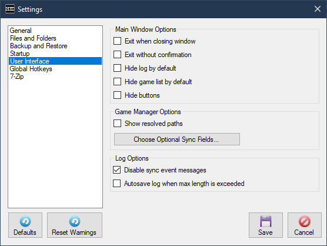Exit when closing main window:
This indicates if you'd like to shut down GBM completely when closing the main window, instead of hiding it to the system tray or taskbar.
Exit without confirmation:
This will disable the confirmation when shutting down GBM.
Hide log by default:
This will automatically resize the main window at startup to hide the log.
Hide game list by default:
This will automatically hide the game list panel on the main window at startup.
Hide buttons:
This will automatically hide all the buttons(except Cancel) on the main window.
Show resolved save paths in Game Manager:
When enabled, GBM will display save paths resolved to the location on the current system, such as "C:\Users\User1\Saved Games\kingdomcome\saves". When disabled, GBM will display save paths with environment variables when applicable, such as "%USERPROFILE%\Saved Games\kingdomcome\saves". Save Path fields on the Game Manager will display a tooltip with the resolved path or unresolved path depending on this setting.
Choose Optional Fields:
Use this button to choose any extra data you'd like to keep in sync between computers. Fields such as Game Path and Icon are not recommended because they may be different on each PC.
Disable sync event messages:
This will prevent all sync related messages from being displayed in the log.
Autosave log when max length is exceeded:
This will automatically save a copy of the session log each time it's automatically cleared.
Global Hotkeys
- Global Hotkeys allow you to trigger functions in GBM during a game or while working in another application.
- Read the Backup and Restore during Gameplay section for more details.
- Functions triggered by a Global Hotkey will play a unique sound when the operation is completed or if it fails.
- These notification sounds are located in the "Sounds" folder of your GBM installation.
- You can replace them with your own custom wav files, or delete them if you prefer no sounds.
- To change a Hotkey, select the field then hold any combination of modifiers (Shift, Alt, Ctrl) and press a key.
- Use the reset button to the right of a field to restore the default hotkey.
- Global Hotkeys are not available in Linux.
Enable Global Hotkeys:
This enables the binding and detection of Global Hotkeys.
Backup:
This key combination triggers a backup of the currently monitored, currently selected or last played game on the main window.
Restore:
This key combination restores the latest backup of the currently monitored, currently selected or last played game on the main window.
7-Zip

Compression:
This allows you to set the compression level of your backups. The default is Normal. Ultra is highly recommended if you're using a modern PC.
Custom Arguments:
This is an advanced feature that allows you to add custom arguments to GBM's 7za commands.
For example, you could add the argument "-bb1" to make 7-Zip more verbose in the session log.
Please review any available 7za documentation before adding your own arguments.
This feature should be used with caution as some arguments will interfere with the normal usage of GBM.
Custom Location:
This setting allows the use of a custom version of 7-Zip Console (7za).
When left blank the default version of 7za will be used.
Version Information:
This shows the product name, version and copyright information of the 7-Zip utility currently being used by GBM. This information is not available in Linux.
- Add a new game to monitor by clicking the (New) button below the list box.
- Copy a game by selecting the game(s) from the list and clicking the (Copy) button below the list box.
- Delete a game by selecting the game(s) from the list and clicking the (Delete) button below the list box.
- Show all games by selecting the "All Games" option from the filter drop-down list.
- Show only games with backup data by selecting the "Games with Backups" option from the filter drop-down list.
- Show only games with new save data to restore by selecting the "Games with Pending Backups" option from the filter drop-down list.
- You can customize a list of games to display by selecting the "Custom" option from the filter drop-down list.
- Quickly find games by typing a name (partial match) or a tag (exact match) in the "Search" field. Use a hashtag to indicate a Tag search, like #Steam. This filter is applied on top of any other filter you may be using.
- You can edit the Tags for one or more games by selecting them and clicking directly on the list of tags.
- You can backup immediately without playing a game by selecting the game(s) from the list and click the (Backup) button in the "Backup Management" section.
- Restore an existing backup for a game by selecting the game(s) from the list and clicking the (Restore) button in the "Backup Management" section.
- You can mark a game as restored without restoring the data by selecting the game(s) from the list and clicking the (Mark as Restored) button in the "Backup Management" section.
- You can import an existing backup file for the currently selected game using the (Manage Backup Data) button in the "Backup Management" section.
- You can delete a backup file by selecting the game from the list, choosing a specific backup and clicking the (Manage Backup Data) button in the "Backup Management" section. You may also delete all backups for that specific game.
- You can locate the backup file or folder by selecting the game and clicking directly on the name of the backup file or the (Open backup folder) button in the "Backup Management" section.
- You can view the restore location of the backup file by selecting the game and clicking directly on the restore path in the "Backup Management" section.
- You can import new game configurations from the official list or an XML file using the (Import) button.
- You can export your game configurations to an XML file using the
 (Export) button.
(Export) button. - You can assign other programs to run each time one or more games are detected by selecting them and clicking the (Link options) button and selecting the "Link Process..." option.
- You can link game configurations together by clicking the (Link options) button and selecting the "Link Configuration..." option. Linked configuations execute a backup or restore each time the currently selected configuration is triggered.
- When available, clicking the (Advanced) button and selecting "Launch Settings..." allows you to configure how the currently selected game is launched.
The Game Manager is a central hub for all important GBM functions. However, i'd highly recommend the "Add Game Wizard" to add new games to monitor until you become familiar with GBM.

The Game Manager splits a configuration into three tabbed sections, "Core Configuation", "Game Information" and "Backup Management". Click the tab button for each section to switch between them.
The following is advanced information on each field used to configure a game.
Core Configuration
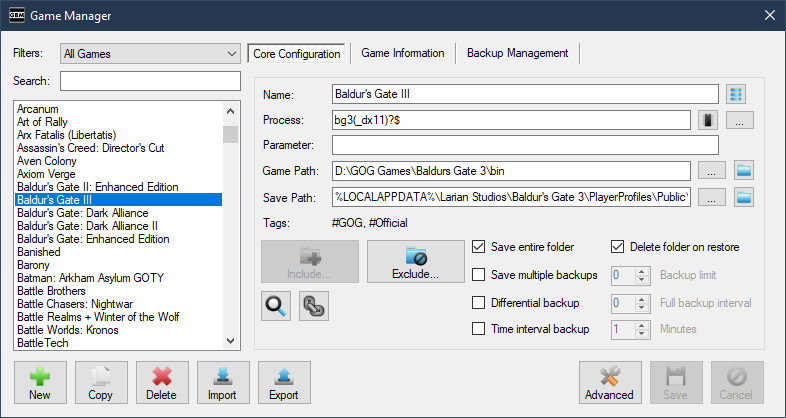Name:
The name of the game to monitor. Multiple entries with the same name are allowed.
The "Game ID" will be appended to folder and filenames automatically in the event of duplicate names. For example, Metro Exodus [8ac11c11-8d18-471b-8f0d-aa154dc77f0e].
Game ID:
A unique identifier for the game, GBM will generate it automatically. There is no need to manually set this unless you want to.
Use the (Modify Game ID) button to the right of the "Name" field to change the "Game ID".
If you share a backup folder with multiple PCs, changing a Game ID may cause data loss. See the Automatic Syncing section for more details.
Process:
The name of the game's executable file, without the extension. This IS case-sensitive, if entered incorrectly the game will not be detected. Extensions will be automatically filtered off.
If you don't know what to put here, check the game's "target" in the shortcut or game folder. Beware of games that use launchers, you do NOT want to monitor the launcher, you want to detect and monitor the game itself.
Multiple entries with the same process are allowed, this is to handle games that use the same name for their executable.
Games running in emulators, interpreters and virtual machines such as DOSBox and ScummVM are also supported. But must meet specific conditions to be detected:
- Each game uses it's own copy of the emulator software in a unique location, major retailers such as GOG and Steam do this by default. No special setup is required, you simply need to use the process name of the emulator (Ex. DOSBox or scummvm).
- You may also set an appropriate value in the "Parameter" field so GBM can determine exactly which game is running. See the "Parameter" section below for more details.
On Linux, games running in Wine are a special case. Please see the Linux FAQ for more details.
The process field is used by the game launcher as a default method of launching the game, this can be overridden in "Advanced -> Launch Settings...".
The process field can be left blank. A configuration with an empty process field can only be triggered manually or by a configuration link.
Regular Expression:
This indicates that the Process field is a Regular Expression.
This option is located in the  (Process options) sub-menu button to the right of the "Process" field.
(Process options) sub-menu button to the right of the "Process" field.
Regular Expressions allow GBM to match based on a pattern, so one configuration can detect multiple executables.
For example, you want one configuration to detect both the 32-bit and 64-bit executables of a particular game.
The Process field cannot be used to launch a game if it's a regular expression, use "Advanced -> Launch Settings..." to select an alternate executable.
Use Window Title:
This indicates that the "Process" field should be used to match on the title of a window and not a process name. This can be used in combination with the "Regular Expression" option.
This option is located in the  (Process options) sub-menu button to the right of the "Process" field.
(Process options) sub-menu button to the right of the "Process" field.
This allows GBM to detect games based on the title of a window, which can be useful for games running in a web browser, cloud gaming client, emulators, etc.
Important Notes:
- The Process field cannot be used to launch a game if it's a Window Title, use "Advanced -> Launch Settings..." to select an alternate executable.
- Monitoring a game using the window title is unreliable when a game is running as Administrator and GBM is not. If you're having issues in this scenario, run GBM as Administrator as well.
- Detecting games via window title is currently not supported in Linux due to unimplemented features in Mono.
Parameter:
A command parameter value to match on when detecting the game. This field is mainly used for detecting games running in emulator software, but also used as the default command parameters when launching a game from GBM.
GBM will detect the "Process", then match the "Parameter" to any part of the full command. This IS case-sensitive.
As an example, lets use GOG's version of "An Elder Scroll Legend: Battlespire".
The full command is: "C:\GOG Games\Battlespire\DOSBOX\DOSBox.exe" -conf "..\dosbox_battlespire.conf" -conf "..\dosbox_battlespire_single.conf" -noconsole -c exit
We need to set the "Parameter" to something unique in the command, that no other game would be using. "dosbox_battlespire.conf" or "dosbox_battlespire_single" would work.
Please note that GBM cannot detect based on only the Parameter, the correct Process must also be used.
It's highly recommended to use the full command so you can properly launch the game from GBM. You can also set alternate launch parameters in "Advanced -> Launch Settings...".
Game Path:
This is the path to the game's executable file. In most cases GBM will auto-detect this information, but it can be set manually.
Use the (Open Game Folder) button to quickly explore the current game path.
This field may also contain same supported environment variables and custom path variables as the Save Path field.
The path is used to determine the save location for games with a relative save path. It is also used to properly detect games that share process names, like DOSBox and ScummVM games.
This field is also used to determine the default location of the executable when launching a game from GBM.
Save Path:
The location of the save files for the game.
Use the (Open Save Folder) button to quickly explore the current save path.
This path can be absolute, or relative to the game's executable.
GBM will automatically determine absolute or relative path settings. If the save games are located in the game folder itself, you should always strive to use a path relative to the game's executable, this way your configuration will work on any PC regardless of where a game is installed.
The path may also contain supported environment variables and/or custom path variables.
GBM supports the following environment variables.
- %USERDOCUMENTS% (This variable is set and only used by GBM at runtime.)
- %COMMONDOCUMENTS% (This variable is set and only used by GBM at runtime.)
- %LOCALAPPDATA%
- %APPDATA%
- %USERPROFILE%
- %PROGRAMDATA%
GBM also supports the XDG Base Directory Specification while running in Linux.
The path can also be certain Windows registry locations, please see the Windows registry section of the manual for more details.
Most games don't tell you where they save. I highly recommend using PC Gaming Wiki or searching common locations such as the game's installation folder, My Documents or AppData for the location of game saves.
Tags:
You can use Tags to organize your game list.
Manage (Create, Edit or Delete) any Tags you want to use from the Setup menu or inside the Game Manager.
Tags allow you to filter the games you want to view in the Game Manager or the configurations you may want to Export to an XML file.
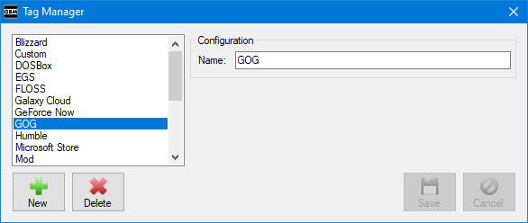To modify tags, click the "Manage Tags..." link or directly on the current list of Tags.

Select the tags and use the appropriate buttons to add or remove them.
Important notice regarding adding tags to multiple games:When you're modifying tags for multiple games, the "Current" list shows every tag used by each game you have selected, this doesn't mean those tags are already applied to every game selected. If you'd like to apply a tag to each selected game and it's already used, simply remove it then re-add it.
This advice also applies to modifying "Processes" and "Configuration Links" for multiple games.
Include and Exclude Items:
You can configure which file types, specific files or sub-folders should be included in or excluded from the backup using the Include / Exclude Builder.
Click the (Include...) or Exclude.. buttons to launch the builder.
A value in brackets on the button indicates the amount of items being included or excluded. If either button is bold, this indicates that there are changes that haven't been saved.

The left side of the window (Saved Game Explorer) shows the current game's save folder in a Windows Explorer type view. If this area is blank it's because GBM couldn't determine the save folder or it doesn't currently exist.
The right side of the window (Current Items) shows any items being included or excluded.
You can add new items to include or exclude by ticking the check boxes beside any files or folders in the Saved Game Explorer, and using the right arrow button to move them into the Current Items list.
When you choose a file to include or exclude, GBM will use the file type extension instead of the individual file name. You can toggle this behavior using the "Options" section under the Saved Game Explorer.
You can remove any items you've added to the Current Items list by selecting them and using the left arrow button. You can also right-click items and use the "Remove" command.
You can edit any items you've added by right-clicking them and choosing Edit. Advanced users may want to edit items and add wildcards to refine their configuration.
You can add custom items by right-clicking on any blank part of the Current Items list and choosing "Add Custom Item"
And finally if you prefer the old hardcore way of doing things, you can click "Raw Edit" and simply edit a colon delimited list of items.
Include/Exclude Option - Recurse sub-folders:
This option determines if GBM should scan every sub-folder of a save path when determining which files and folders to include or exclude from a backup.
This option defaults to enabled and in most cases it does not need to be changed.
However, it is highly recommended to disable this option when a backup configuration is saving files from an extremely large folder:
- Recursively scanning a large folder can cause a backup configuration to take minutes, when it should take less than a second.
- When this option is disabled, any items to be included or excluded from the backup need to directly referenced. For example:
- A game folder with many thousands of files, contains a "Saved Games" sub-folder and "Campaign" sub-folder with files using the .sav extension.
- If "Recurse sub-folders" is disabled, the include items would need to be "Saved Games\*.sav" and "Campaign\*.sav". This backup would process almost instantly.
- If "Recurse sub-folders" is enabled, an include item of simply "*.sav" would be sufficient, but this backup configuration could take minutes to complete.
Save Entire Folder:
This indicates if GBM should backup the entire folder indicated in the path. If you don't really know what files are important to be saving, just tick this box. Choosing this option will disable and clear any Include Items.
Delete Folder on Restore:
This indicates if you want GBM to delete the saved game folder prior to restoring a new backup.
This option is used for games that change the file names of their saves, which results in a mix of old and new saved games if the old saves aren't deleted first.
This option can only be used when "Save Entire Folder" is selected and no files are excluded.
Deleted folders go to the Recycle Bin in Windows, but are permenantly deleted in Linux.
This option is not part of official configurations or import/export features.
GBM checks for dangerous configurations in which this option should not be used and disables it, but even so use caution with this option.
Save Multiple Backups:
This indicates if you want GBM to keep multiple backups for that game. When using this option you can set a limit on the amount of backups to keep, any value from 0 to 100. Set the limit to 0 if you'd like to keep an unlimited number of backups, this is the default. When backups are limited, GBM will delete the oldest backup(s) automatically when new ones are made or if the limit is reduced.
For "Differential Backup" configurations, this setting allows you to set a limit of how many full backup files to keep. Once the limit it reached, previous full backups and their associated differential backups will be automatically removed.
Expired backups are only deleted when a new backup for that particular game is successfully created, not at the time this setting is changed.
Expired backups are not deleted automatically if the "Save multiple backups" option is disabled after being used.
All expired backups go to the Recycle Bin in Windows, but are permenantly deleted in Linux.
Differential Backup:
This indicates you'd like to use the differential backup method for this game. Please see the Differential Backups section of the manaul for more details.
Time Interval Backup:
This option allows you to schedule backups to automatically run on a time interval (in minutes) while the game is running and currently being monitored. The minimum interval is 1 minute.
This feature is hidden and disabled unless "Enable backup and restore features for currently monitored games" is enabled in Backup and Restore settings.
Manipulating saved games while a game is running can be unsafe.
Please read the Backup and Restore during Gameplay section of the manual if you enable this option.
Allow monitoring:
This option indicates that GBM will actively monitor for this game.
This option is available in the (Monitor options) sub-menu button.
No backup when game ends:
This option indicates that GBM will not trigger a backup when the game session ends.
This option is available in the (Monitor options) sub-menu button.
Link Configuration:
This option is avaiable in the (Link options) sub-menu button.
You may chain game configuations together. This is an advanced feature that allows one configuration to trigger the backup or restore of any other linked configuration(s). This is useful for games that may keep saves or other important files in multiple unique locations.
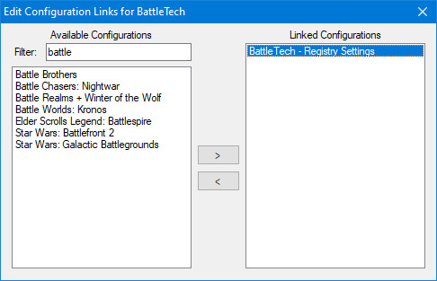
- Configurations are linked one-way by default. For example, Config #1 -> Config #2 means Config #1 will trigger Config #2, but Config #2 will not trigger Config #1.
- You can setup two-way links if you wish, but you must do this manually by also linking Config #2 -> Config #1 using the example above.
- Links continue in a chain. For example, Config #1 triggers Config #2, then Config #2 can trigger Config #3 and so on.
- Only one instance of a configuration can exist in the same chain, if there are multiple links to the same configuration over a single chain they are ignored.
- The XML import/export feature supports configuation linking, however all the configurations in the chain must be imported for it to work correctly.
- When restoring linked configurations that use the "Save Multiple Backups" option, only the latest backup of each configuration in the chain can be restored. If an older backup is selected, you may still proceed without restoring any linked configuration(s).
Link Process:
This option is avaiable in the (Link options) sub-menu button.
You can assign one or more programs to automatically run when a game is detected. This could be useful to launch a custom control scheme or overlay whenever you play a particular game.

You can manage (Create, Edit or Delete) any Processes you want to use from the Setup menu or inside the Game Manager.

Select the processes and use the appropriate buttons to add or remove them.
OS:
This is the target operating system of the configuration, the OS field is hidden and cannot be modified in Windows.
This field allows Linux users to manage native and Windows games in the same list.
Game Information
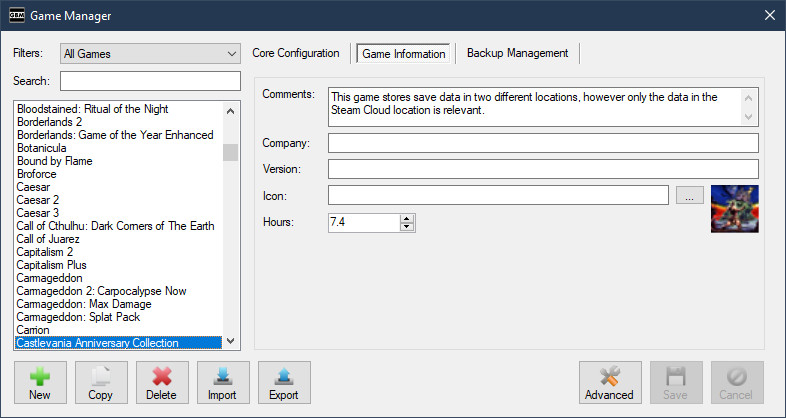Comments:
This is used to store any extra information about the configuration.
Company:
You can manually set a company name to be displayed when the game is detected. This takes priority over the company information detected from the game's executable.
Version:
You can manually set a version value to be displayed when the game is detected. This takes priority over the version information detected from the game's executable.
Icon:
You can manually set a icon to be displayed when the game is detected. This takes priority over the icon used by the game's executable.
Hours:
You can manually set the amount of hours played for the current game. This value is only displayed and automatically updated when Time Tracking is enabled.
Backup Management
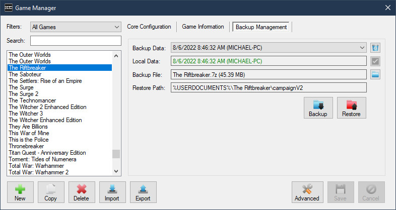Backup Data:
This field lists all the available backup data. You may select older entries if you need to restore or delete it.
You may notice one or more entries automatically disappearing from this field when it's accessed. This occurs when backup files for those entries have been manually deleted.
Manage Backup Data:
The (Manage Backup Data) sub-menu button contains various functions.
Delete Selected - This will delete the currently selected backup.
Delete All - This will delete all backups for the currently selected game.
Import Backup - GBM allows importing one or more 7-Zip backup files for the selected game. This feature is useful if you lost your GBM database(s), but not the backup files. It also can be used to easily move compatible saved game backups between Windows and Linux.
- Importing a single backup file will attempt to overwrite the current backup file if one exists. Enable "Save Multiple Backups" if you don't want to overwrite the current backup.
- Importing multiple backup files requires "Save Multple Backups" to be enabled .
- GBM will attempt to verify imported backup files and display warnings if a problem is detected. However, you can still force GBM to import a backup file using this method.
Local Data:
This displays information about the last backup made or restored on the current computer.
Mark as Restored:
The (Mark as Restored) button allows you to mark the selected game(s) as restored without actually restoring the backup.
Backup File:
This displays the backup file name and file size. Click this field to open the selected backup file in the default software associated with 7-Zip files.
Open Backup Folder:
The (Open backup folder) button opens the folder containing the selected backup file using the default folder browser.
Restore Path:
This displays the location the backup file will restore to. Click this field to open the restore path in the default file browser software.
Backup:
The (Backup) button will manually trigger a backup to run for the selected game(s).
Restore:
The (Restore) button will trigger a restore of the currently selected backup data.
When multiple games are selected, GBM will trigger a restore of the latest backup data for each selected game.
GBM has various features that allow you to create or restore backups while a game is currently running and being monitored.
These features can be useful for:
- Save scumming in various games without needing to cancel monitoring in GBM.
- A safety net for stability issues or power outages.
These features are turned off by default and must be enabled in the Backup and Restore section of Settings.
Disclaimer:
Manipulating saved games while a game is running can be dangerous, it may lead to saved game corruption or a crash.
Using these feature safely will require experimentation and will vary based on the game.
Options:
There are multiple ways to trigger a backup or restore while a game is being monitored.
- Use the "Backup" or "Restore" buttons on the GBM main window. (Windows or Linux)
- Use a Global Hotkey (Windows Only).
- Use the Time Interval Backup configuration setting to schedule automatic backups during gameplay.
- This was a highly requested feature but it also has the most potential to create problems, since backups automatically trigger at set times during active gameplay.
Recommendations:
- Always use the Save multiple backups configuration setting, just in case you run into problems.
- It is safest to make backups or restore saved games while in a game's initial main menu or the pause menu, not during active gameplay.
Game Backup Monitor supports using the differential backup method, it can be enabled for specific games by using the "Differential backup" checkbox on the Game Manager.
This method involves creating a full backup, then having the following backups only save the changes made since the last full backup. This can result in much faster and smaller backups for specific games.
Differential backups can be much more efficient for the following types of games:
- Sandbox or Simulation games with huge worlds.
- Games that create an extreme amount of checkpoints and/or autosaves over the course of the game.
- Games that save a large amount of historical data in many different files.
For the majority of games outside of the examples listed above, enabling Differential backup will not provide much benefit and is not recommended.
Important Details:
- The "Differential backup" option will allow you to set a "Full backup interval" value.
- This value is the maximum amount of differential backups between each full backup. The default is 6, but the most efficient value will greatly vary depending on the composition of the saved game folder and how many files are changed each session.
- By default, only one set of backups will be kept. Once the "Full backup interval" value is reached, the prior set will be automatically deleted and a new full backup file will be created.
- The "Save Multiple Backups" setting can be used to keep multiple sets of backups.
- A value of zero means there is no interval and only a single full backup will ever be created. This is not recommended, but may be useful if you'd like to micromanage when full backups are created.
- GBM will properly handle backups (Full or Differential) based on their type. For example:
- Restoring a differential backup will automatically trigger the restore of it's associated full backup first.
- Deleting a full backup will automatically delete any associated differential backups.
- Full and differential backups may be imported just like any other backup file.
- When importing a differential backup, it's associated full backup must be imported first. GBM will take care of this automatically when importing multiple backup files at the same time.
- The filenames of full backups will be appended with "- Full" and differential backups with "- Diff". The backup type can also be identified using the metadata stored in the backup archive.
Games can also save your progress to the Windows registry instead of using a location on your hard drive. As of v1.1.8, GBM now supports saving and restoring registry keys.

Important Details:
- Registry backups are supported in Windows and in Wine/Proton on Linux.
- The Windows/Wine reg.exe utility is used to manipulate the registry, GBM does not manipulate it directly.
- In Windows, GBM must be running as administrator to backup from or restore to the registry.
- GBM cannot backup or restore specific registry values, only entire keys and/or sub-keys. This is a limitation of reg.exe and regedit.exe. If that doesn't make sense, read more about the Windows registry.
- GBM only supports saving and restoring to the HKEY_LOCAL_MACHINE and HKEY_CURRENT_USER registry hives.
- GBM detects registry configurations based on the presence of HKEY_LOCAL_MACHINE, HKLM, HKEY_CURRENT_USER or HKCU at the start of a path.
- The Game Manager will disable all the features that are not supported when a registry configuration is detected.
You can easily backup or restore your entire game list using the "Run Full Backup" or "Run Full Restore" options available in the File menu or system tray menu.
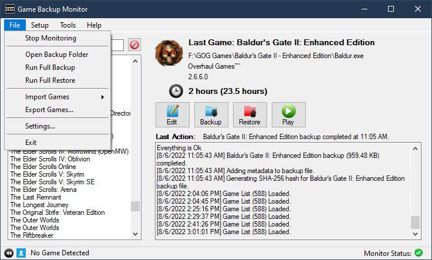Important Details:
- When running a full backup or restore, important checks that normally require user input are automatically dealt with by GBM to ensure the process is quick and easy.
- Backup files will be automatically ovewritten when required.
- Missing folders will be automatically created when required.
- Any critical error or missing information that requires user input will skip the individual backup or restore. For example, a game uses a relative saved game path and the game path is not set, this game will be automatically skipped.
- When the estimated disk space required for the full backup is more than what is available, the entire operation will be aborted.
GBM has the ability to automatically search your hard drive for a specific game when it's required.

- GBM begins searching your root drive immediately.
- You can switch the drive being searched by using the combo box.
- Results are displayed in the list box as the search continues.
- Choose the correct path from the list box and click OK.
Importing game configurations is done from the File menu, system tray menu, or the Game Manager.
You can import pre-made backup configurations from the official list or an XML file exported from GBM.
You can import unofficial configurations from the primary Ludusavi Manifest or any file using the Ludusavi structure.
The information displayed on the import window will slightly differ depending on the type of import selected.

- The import window detects saved games currently on your PC and will display only detected configurations by default.
- You can run this process again using the "Detect Saved Games" button.
- Configurations that store saved games in a location relative to the game's installation folder cannot be automatically detected.
- Configurations that use store variables (Ex. Steam Cloud) will not be detected or offered for import if the required store variables aren't available.
- The import window can display and auto-detect games you may have already configured.
- The import identifies each backup configuration based on a unique ID.
- Official, Ludusavi, and your own custom configurations all have their own unique ID and will not overwrite each other.
- Always review the game configurations that were auto-detected and only select the ones you need.
- Configurations you never want to import or update can be added to an ignore list.
- Select any configurations you want to ignore, right-click and choose "Ignore".
- You can show or hide ignored configurations by toggling the "Hide Ignored" checkbox.
- You can remove configurations from the ignore list by selecting ignored configurations, right-click and choose "Unignore".
- Configurations are identified with a variety of icons.
- The icon indicates a configuration has updates available.
- The icon indicates a new configuration that can be imported.
- The icon indicates the configuration's save location was auto-detected.
- The icon indicates the configuration is currently being ignored.
- You can toggle selecting and de-selecting all available configurations by clicking the "Select All" checkbox.
- You can search for specific games or by tag using the "Filter" field. Use a hashtag to indicate a Tag search, like #Steam. The filter is applied as you type, remove all text from the field to clear the filter.
- You can display only currently selected configurations using the "Show Only Selected" checkbox. This can be combined with the "Filter" field.
- The bottom of the import window shows how many configurations you have selected and how many are currently displayed.
- GBM remembers all configurations you've selected, even if they are not displayed by your current filter.
Game Backup Monitor supports importing configurations from the primary Ludusavi Manifest or any file using the Ludusavi structure.
- Ludusavi is an excellent open source saved game backup tool.
- Ludusavi Manfiest is a YAML structure for saved game backup configurations. The primary manifest is sourced from PCGamingWiki and automatically updated daily.
The Ludusavi manifest gives you access to thousands of saved game backup configurations, but there are limitations and other possible issues outlined below.
You will always want to use official GBM configurations when possible, but configurations imported from the Ludusavi Manifest are a perfect replacement or starting point for games missing from the official list.
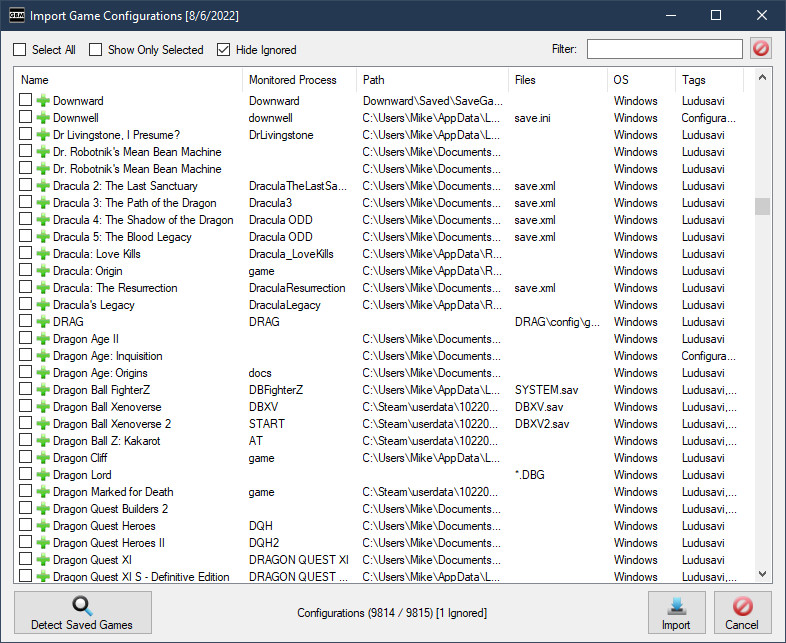Limitations and Issues
- The Ludusavi Manifest contains Steam launch information for all applicable games. GBM uses this information when it's available to determine a process to monitor for each game configuration. This procedure isn't completely accurate and will result in some game configurations having the incorrect process selected or no process at all.
- Configurations with no process to monitor are suitable for manual backups only.
- Configurations with the incorrect process will not be detected and prevent automatic backups.
- You can always edit these configurations and select the correct "Process" to monitor, this will enable proper detection and automatic backups.
- These configurations are untested and may not always work correctly.
- The information on PCGamingWiki can be incorrect, incomplete or in an unoptimal format for GBM. This can lead to broken configurations or unnecessary multiple configurations for the same game.
- Some saved game backup configurations may also include unwanted configuration files.
- The "Configuration" tag will be automatically applied to these, so they can be can be identified.
- Configurations that use a store cloud\store ID based save location are supported, but they may not always be displayed or function properly.
- Store Variables need to be setup before GBM will display configurations using store specific locations.
- PCGamingWiki doesn't differentiate between Steam ID types, this can lead to problems with some game configurations.
- GBM can guess the Steam ID type based on the save path and may automatically makes changes to provide a useable backup configuration.
General Information
Tags are automatically added to these configurations to help identify the type of configuration and store.
There are some filter options available when importing from a Ludusavi Manifest.
- You can enter the name of a game in "Quick Search" to find a specific game configuration without processing the entire manifest file.
- This search is case-insensitive.
- This is always faster than loading and filtering the entire manifest.
- You can choose to include or exclude configurations that backup "Saved Games" or only "Configuration Files".
- In Linux, you can choose to include or exclude configurations based on "Operating System".
Linux users can import Windows game configurations to be used with Wine or Proton.
- These configurations may need to be updated with a process to monitor and must detected at least once in Wine or Proton before manual backups will work correctly.
Game configurations can be shared with others by exporting an XML file in GBM and sharing it.
Exporting can be done from the File menu, system tray menu or the Game Manager.
One of the most convenient ways to share configurations with many users is hosting the XML file on a web server and sharing the link.
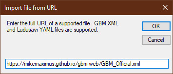The following is some tips for sharing your own XML file from a web server.
- Do not use redirects, if a URL doesn't point directly at a supported file type GBM will not accept it. This may change in a future release.
- Try to use a unique file name for every list you share, GBM identifies and caches lists based on file name.
Game Backup Monitor can be used to launch any monitored game. Please read the Launcher FAQ for answers to common questions.
This feature is optional and must be enabled before it can be used. See the Settings section for details.
Games can be launched in the following ways:
- You can quickly launch any configured game from main GBM window by using the "Play" button.
- If the "Search" field on the main GBM window is used, you may also launch a game by pressing the "Enter" when there is a single search result.
- If Session Tracking data is available, the tray menu will display up to five recently played games you can select to launch.
Launch Configuration
GBM will usually be able to launch any monitored game that has been detected at least once without any extra configuration. Advanced configuration options are also provided for fine tuning and to work around any problems that may be encountered.
The launch settings for any game can be modified from the Game Manager, by clicking the (Advanced) button and choosing "Launch Settings..." to open "Launch Configuration".
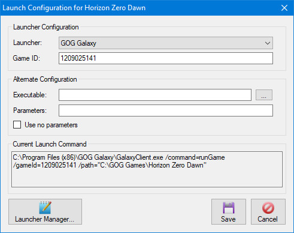Launcher Configuration
This section allows you to configure a game to be launched directly from the store client where it was purchased. This is sometimes required due to DRM issues or bugs that occur when a game doesn't support launching the executable directly. This will be explained in the "Launcher Manager" and "Determining the Command & Game ID" sections below.
Alternate Configuration
This section allows you to manually configure a game to use an alternate executable/script and customize how command parameters are to be handled.
Current Launch Command
This section displays the command that GBM will use to launch the game. This field cannot be edited directly, it is provided for troubleshooting and informational purposes.
GBM uses a priority system to build the launch command based on the information it has available.
- When an external launcher and game ID are set, it has top priority and will be used to launch the game.
- When an alternate executable is set, it has secondary priority.
- When no other information is available, GBM will use the "Process" and "Game Path" from the game configuration to automatically build the launch command.
Parameters (Arguments) are also added to the command based on a priorty system.
- When alternate parameters are set, they have first priority and will be added to the command.
- When alternate parameters are not set, GBM will use the "Parameter" field from the game configuration to automatically build the launch command.
- When the "Use no parameter" option is checked, no parameters are added to the command. This can be useful when using a script that already contains the parameters to launch the game.
- When an external store launcher and game ID are set, no parameters are added to the command. They must be configured in the launcher you are calling, such as Steam.
Launcher Manager
The "Launcher Manager" is used to configure common external launchers you may need for launching games.
Some popular launchers will be automatically added and configured for your convenience. Currently, executable based launchers (GOG Galaxy) will only be automatically configured when installed to their default location.
Launcher Type:
This setting indicates the type of launcher:
- URI - The launcher uses a uniform resource identifier to start games.
- Executable - The launcher starts games using it's own executable file and parameters.
Name:
This field is an identifier for the launcher, it must be unique.
Command / Executable:
This field is the URI command or Executable used to trigger a game launch from this particular launcher, it changes based on the "Launcher Type" setting.
Parameters:
This field is for the parameters used by an "Executable" type launcher to start a game, it is disabled when configuring a URI launcher.
Variables:
Various variables can be used in the configuration of launchers, either in the URI "Command" or the Executable "Parameters" field.
- %ID% - The external "Game ID" from the "Launch Configuration" screen.
- %INTERNALID% - The internal "Game ID" assigned by GBM.
- %NAME% - The full name of the game.
- %PROCESS% - The process name of the game (does not include file extensions).
- %PARAMETER% - The parameters GBM uses to detect and/or launch the game.
- %GAMEPATH% - The working path of the game's process.
Add Defaults
If any of the default launchers are missing or have been removed, you can re-add them using this button.
Determining the Command & Game ID
The best way to determine both the command used by a launcher and the ID of the game you want to launch, is to create a shortcut for the game from the launcher and view the properties.
The URL field will contain the command used to trigger the launcher. You can usually determine the game ID based on the context of the command.
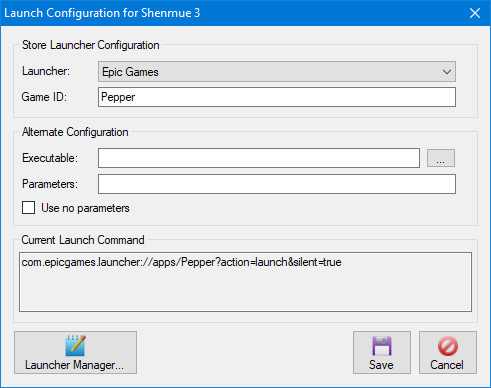The "Current Launch Command" should match the shortcut once you've configured everything properly.
This screen allows you to add an unlimited number of custom path variables to use in the configuration of your games.

Some games store their save files in locations that can be slightly different on each computer, this feature allows you to account for that and share configurations between any computer.
Name:
This is the name of the variable. It cannot contain the % character, which will be stripped upon saving.
Path:
This can be a local path or simply a string that the variable refers to.
Notes:
- You may see some automatically configured variables here, please see the Store Variables for more details.
- Custom Path Variables can be used in the various "Path" fields of a configuration.
- Multiple custom path variables can be used in the same path, they can also be combined with a Windows environment variable.
- On the Game Manager, custom path variables will be displayed similar to a Windows environment variable, such as %Variable Name%. You can change this behavior in "Settings" by using the "Show resolved save paths in Game Manager" option.
- After a Custom Path Variable is added, modified or deleted any affected configurations will be updated automatically.
GBM can automatically create custom path variables to support the save locations of popular stores. Currently only Steam is supported.
- This feature is optional and must be manually enabled. See the Settings section for details.
- If you've already setup your own variables for supported store locations, it's recommended you delete them before enabling this feature.
- You can freely edit any store variables if GBM detected them incorrectly.
- If you rename or delete store variables, GBM will restore them the next time it starts if the feature is enabled.
- During an import, configurations using a store specific location will not be available unless the required variables exist.
In some situations, GBM can fail to automatically configure store variables. If this occurs, read the Custom Path Variables section, then manually create or edit the required variables for each store using the information below.
Steam
- Steam
- The variable is named Steam and the path is your Steam installation folder.
- The Steam installation folder contains steam.exe and a userdata folder.
- SteamID3
- The variable is named SteamID3 and the path value is your SteamID3 only.
- You can find your SteamID3 by opening the userdata folder inside your Steam installation folder.
- This folder will contain one or more numbered folders. One of these numbers is your SteamID3.
- If you see multiple folders here, you may need to use Steam ID Finder to determine which ID is for your Steam account.

Compact Databases
This is used to rebuild GBM's databases to use an optimal amount of disk space. It should only be used when databases are reaching a noticably large size.
Import Backup -> Files/Folder
This allows you to import GBM backup files or folders.
- Only 7-Zip backup archives containing metadata(_gbm_backup_metadata.xml) are supported by this feature. This is any backup file created by GBM v1.2.0 or later.
- You may force the import of older or other backup archives using the "Import Backup Files" feature in the Game Manager.
- When the backup configuration for an imported file doesn't exist, it will be created based on the metadata in the file.
- When the backup configuration for an imported file exists but doesn't match the metadata, it will be updated to match the metadata in the file.
- If a backup file already exists, it will be overwritten by the imported file without prompt unless the configuration is using the "Save Multiple Backups" option.
Log -> Clear
This is used to clear the current session log.
Log -> Save
This is used to save the current session log to a text file.
Session Viewer
The Session Viewer allows you to view all session data that has been recorded on the current PC.
This option is only visible when "Enable Session Tracking" is checked in Settings.

The viewer can be filtered by game name or date.
The date filter includes sessions that started AND ended in the desired range.
You may delete one or more sessions by selecting them and using the "Delete Session" button.
Important Note: Deleting a game configuration from the Game Manager will also delete all session data for that game.
You may export the data currently displayed on the grid by clicking the "Export Grid" button.

You may choose between CSV (Comma Seperated Values) and XML formats.
You may choose to export dates using the Unix timestamp format or your current locale settings.
The CSV format can be exported with or without headers.
When using the Game Manager or exporting your game list to an XML file, you'll have the option to use a custom filter.
You can choose to filter by Game Information and by Tag.
Game Information
- Choose an available field to filter on, depending on the field you will have different filter options.
- Click the "Not" checkbox if you'd like to reverse the filter.
- Click the "Add" button to add the filter to the list. You can add as many as you wish.
- To delete a filter, select it from the list and click "Remove".
- Select a Filter Type.
- "Any" - Games that match ANY of the filters will be included in the results.
- "All" - Only games that match ALL of the filters will be included in the results.
- GBM always uses a case-insensitive partial search to match on text fields.
- Due to the way GBM stores data, certain fields may give unpredictable results when used in a filter. These fields are marked with an asterisk.

Tag
- Choose the Tags you want to filter by or exclude and use the appropriate buttons to add or remove them.
- There are different options available when filtering by tag:
- Any Tag - This will include games using ANY of the tags you have chosen to filter by.
- Example: You have two games tagged as #Official, one game is also tagged as #GOG and the other is also tagged as #Steam. If you filter by "Any Tag" and choose #Official and #GOG, both games will be included since both included #Official.
- All Tags - This will only include games using ALL of the tags you have chosen to filter by.
- Example: Using the same example games above, if you filter by "All Tags" and choose #Official and #GOG only one game will be shown, since only one game included both the #Official and #GOG tag.
- Note: These options have no effect on excluding tags.
- Any Tag - This will include games using ANY of the tags you have chosen to filter by.
- If you choose to filter by Tag but choose no tags to filter by, GBM will assume that means all games with no tags.
Sorting
- The filter results can be sorted by any of the available fields in ascending or descending order.
GBM will sync some data between computers that share the same backup folder.
All computers are synced to a single master list stored in the backup folder.
This allows all computers with GBM to use the same game list.
When does GBM sync data?
- A sync from master to local occurs when GBM is loaded, and any time GBM detects another application has changed the master list.
- A sync from local to the master occurs when any applicable data has been added or updated.
What data is synced?
- Game Configurations
- Game Configuration Links
- Tags
What data is not synced?
- Sessions
- Processes
- Launchers
- Launch Settings
- Wine Configuration (Linux Only)
What happens when I delete a game configuration?
It will be deleted from all PCs that share the same backup folder. Any associated extra data, such as sessions will also be removed.
Are there any other issues with syncing?
If the ID of a game is changed, either via the "Game Manager" or the "Sync Game IDs" tool, it has the same effect as deleting and re-adding it.
This means other PCs sharing the backup folder will delete extra data associated with any game that has their ID changed.
This does NOT affect the PC that actually makes the ID change.
GBM has some limitations when detecting and while monitoring a game.
- Only one game can be monitored at a time.
- If multiple games are running, detection is based on what game appeared first in the process list.
- Most application functions are locked while a game is being monitored.
- GBM may appear blurry on PCs using high DPI settings. Modify the appropriate DPI compatability settings on GBM.exe to solve this problem.
All configuration data for this application is located in \Users\*Your User Name*\AppData\Local\gbm (Windows) /home/*Your User Name*/.local/share/gbm (Linux) as well as a remote data file (gbm.s3db) being stored in the backup folder.
GBM's copy of 7za.exe (Windows) or /usr/bin/7za (Linux) must exist for the application to start.